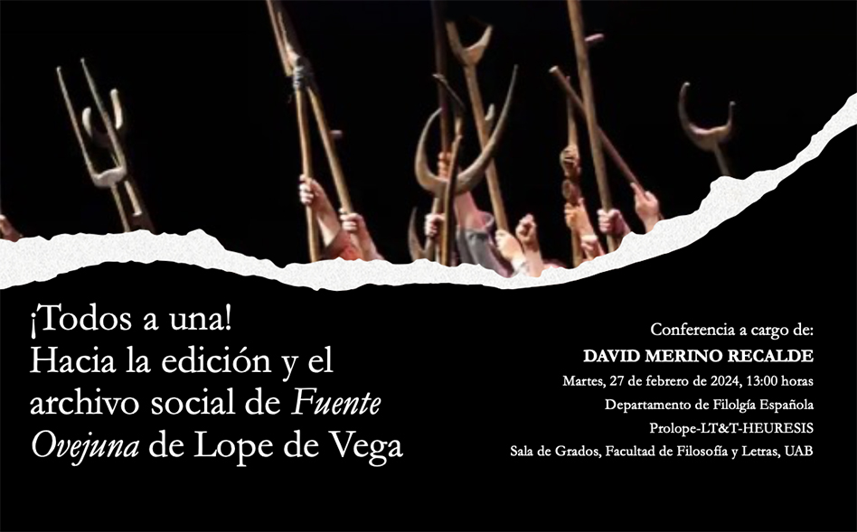

El martes 27 de febrero de 2024, a las 13h en la Sala de Graus de la Facultad de Filosofía y Letras, David Merino Recalde, alumno del Programa de Doctorado en Filología Española, presentará su proyecto de tesis doctoral, un proyecto en el ámbito de la ciencia ciudadana para realizar una edición digital y un archivo social digital de la obra de Lope de Vega Fuente Ovejuna.
Es un proyecto en el ámbito del grupo de investigación PROLOPE-LT&T-HEURESIS.
← Volver a todas las noticias